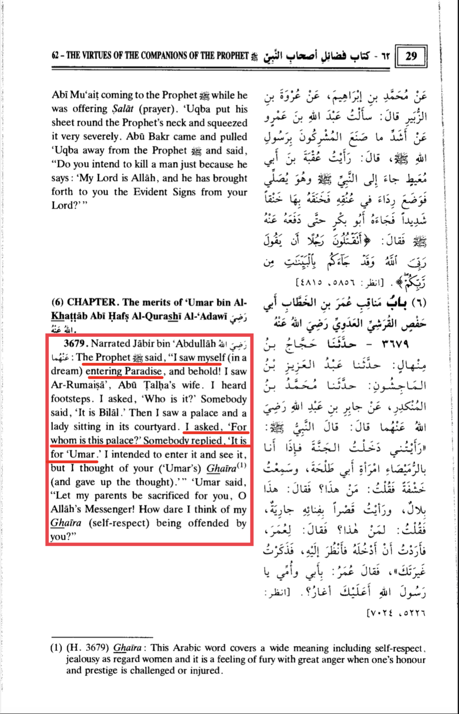
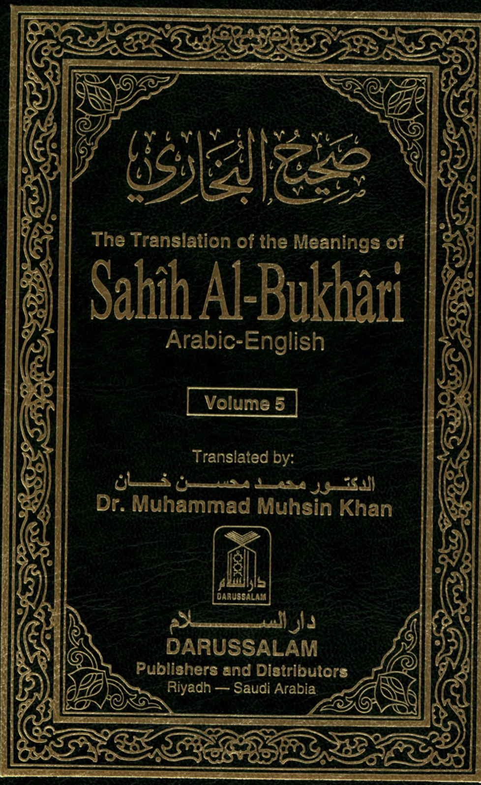
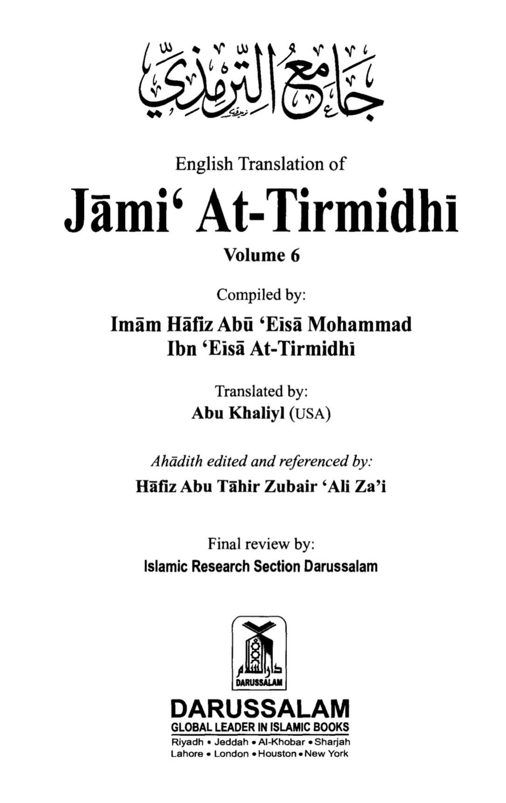
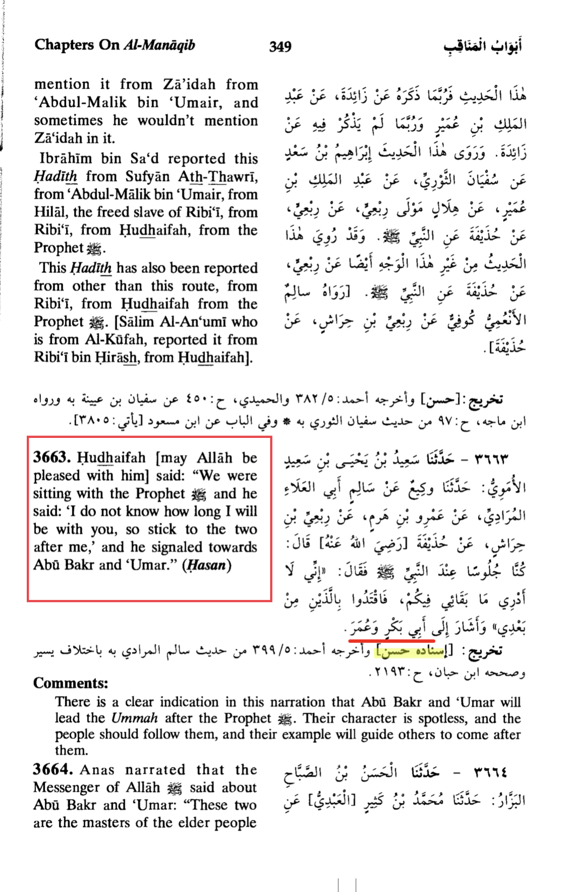
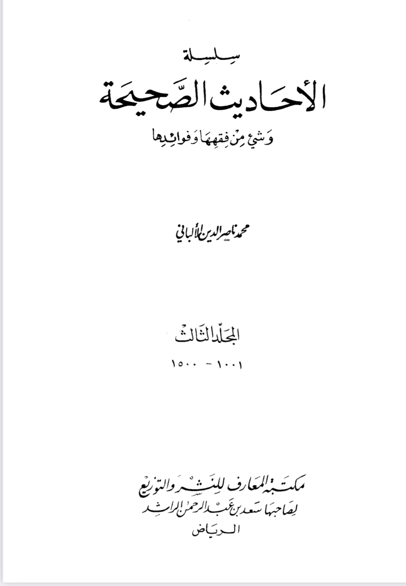
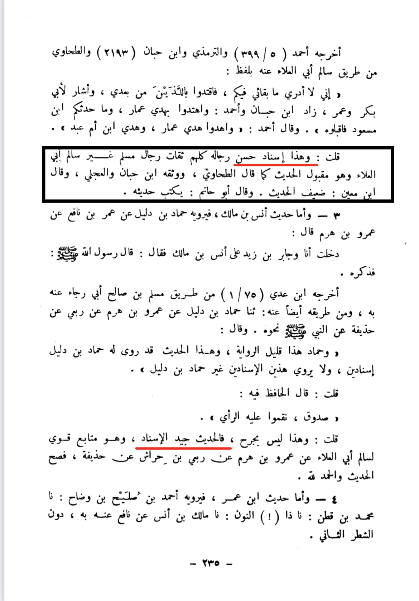

Imam Umar is in jannah thus this is his main merits
From this hadith it indicates that the prophet wanted him to be the leaders whom we should stick with after him.


And sheikh Albani said this hadith is reliable and the chain is good

